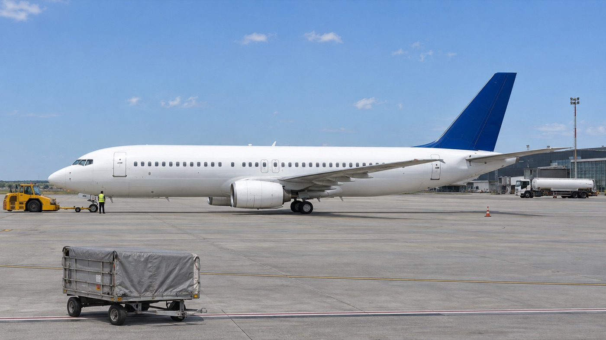
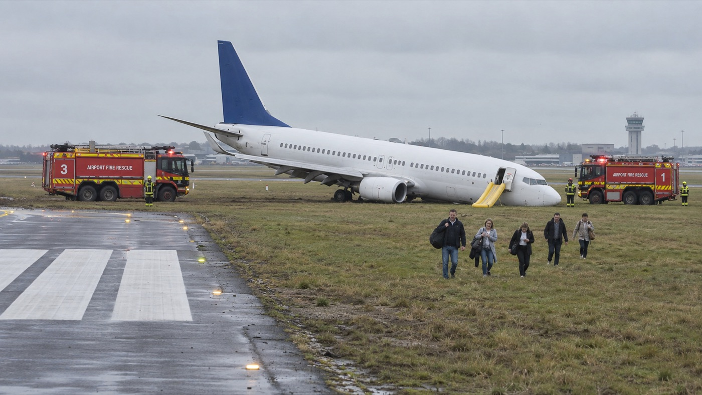
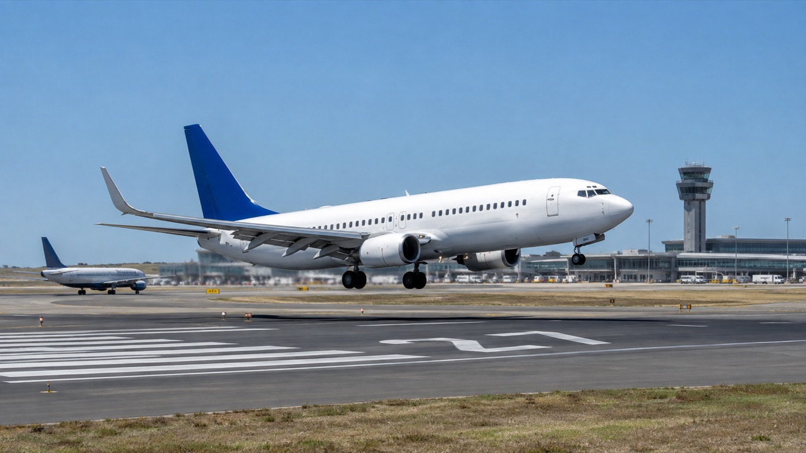
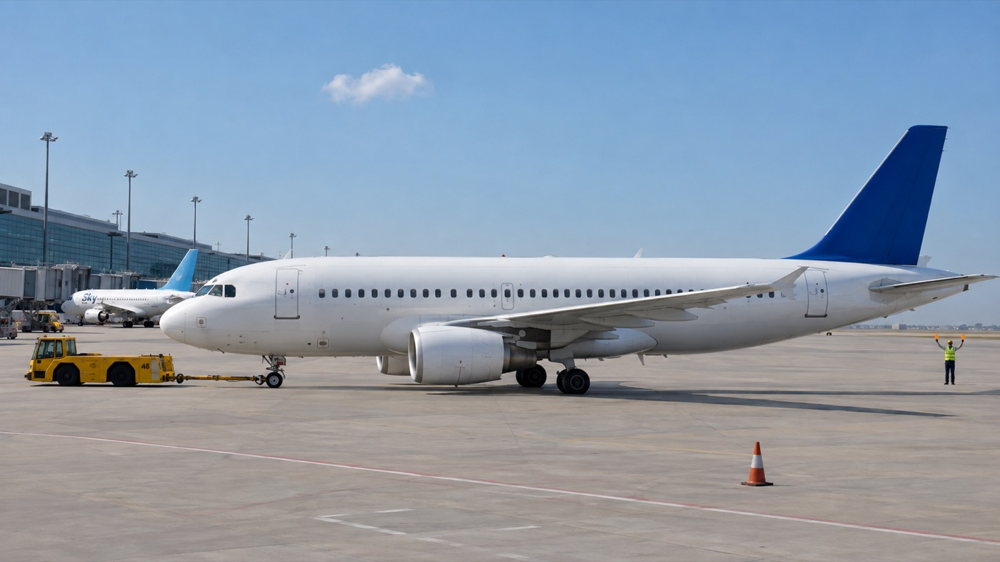
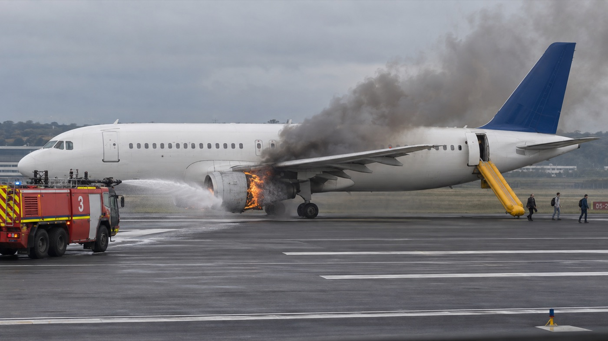
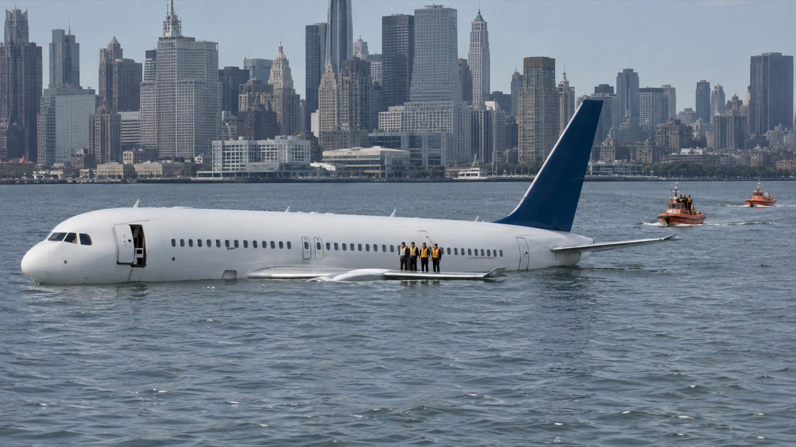
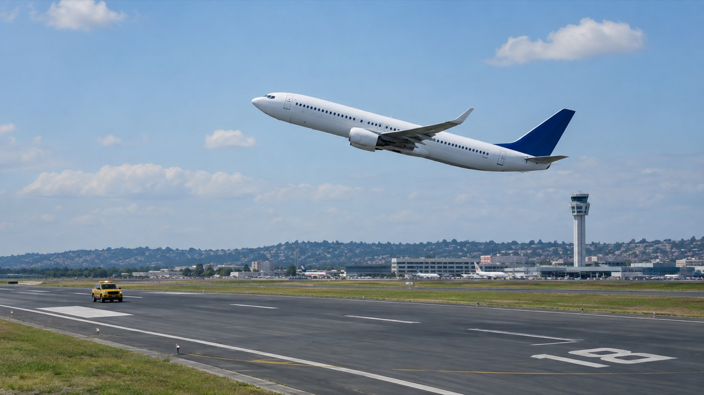

Lesson 3 of 6 · The Photo Task — Five Photos, Two True Statements
Have a go from memory, no pressure: how many photographs are there? How many statements per photo? How many are true? How long do you get? What kind of sentence do you think the wrong options are?
00:45| What | The rule |
|---|---|
| Photographs | Five. Aircraft, airfields, ground operations, incidents — on the apron, on the runway, in the air, in the water. |
| Statements | Six per photo, a) to f). Exactly two are correct. |
| Time | 45 seconds per photograph. You click your two answers and can change them as often as you like inside the 45 seconds. When the clock ends, the choice is locked. |
| Length | About 5 minutes for the whole section. |
| Scoring | Marked automatically, and it is a pass-or-fail section: zero errors keeps Level 6 open, up to two errors keeps Level 5, up to four keeps Level 4. More than four errors in this section fails the whole test — however good the interview was. |
| What it tests | Language structure and vocabulary: prepositions, tenses, quantity words, aircraft and airfield words — read fast and read exactly. |
No picture this time — on purpose. Read these six statements about an aircraft on a stand. Two of them describe something that no photograph could ever confirm. Say which two and why, then check.
b) waiting for is an intention inside someone's head. A photo can show people standing near an aircraft; it cannot show what they are waiting for. e) about to take off is the future. A photo shows one frozen moment, never the next one.
The other four are all checkable: a position (beneath, behind), a state (missing), a colour (orange). They may be true or false — but a camera can settle them. In the exam, a statement about intentions, futures, or things outside the frame is almost always one of the four wrong ones.
Cover the boxes above. Name the five, and give one example word for each. This list is the lens you will read every statement through for the rest of the lesson.
00:30| Word | Meaning in a photo | Watch for |
|---|---|---|
| in front of / behind | closer to the nose / closer to the tail | “behind” can also mean further from the camera |
| beneath / underneath | directly under | under the wing is not under the fuselage |
| beyond / on the far side of | past it, further from the camera | often true of buildings, tugs, tankers in the distance |
| adjacent to / alongside / in the vicinity of | next to / beside / near | “in the vicinity” is loose — usually safe |
| in the foreground / in the background | nearest the camera / furthest away | a tower in the background is not “by the aircraft” |
| at / over / on the far side of the threshold | at the runway's painted start | “not quite over” means still before it |
| on either side / opposite / perpendicular to | one each side / facing / at 90° | “either side” needs one on BOTH sides |
| the left side / the right side | the aircraft's own left and right, as the pilot sits | an aircraft with its nose pointing left shows you its left side |
A quantity word is a promise about counting. Both engines promises you can see two. No other aircraft promises you have checked the whole frame. All the tyres is wrong the moment one tyre is different.

The aircraft's nose points left, so you are looking at its left side.
Describe where every object in the picture is, using at least six different position phrases from the table — in front of, beyond, beneath, adjacent to, in the foreground, on the left side… Keep going until the clock ends.
01:00| Form | What it claims | As the test writes it |
|---|---|---|
| Present continuous is landing, is being towed, are evacuating | Happening now, in the frame. Passive for the thing acted on: is being de-iced, is being marshalled, is being refuelled. | “The pushback tug is towing the aircraft” · “The de-icing procedure is in progress” |
| Present perfect has landed, has clipped, has been deployed | Finished — and the result is visible. The event is over; you see what it left. | “The aircraft has overshot the drainage ditch” · “The wing tip has clipped the truck” · “Chocks have been inserted” |
| State adjectives extended / retracted, deployed, deflated, intact, submerged, jammed, shattered, contaminated | A condition you can check by looking. | “The main landing gear is retracted” · “Both nacelles are intact” · “The fuselage appears undamaged” |
Two statements can contain exactly the same words and mean opposite things. Find the verb, then ask: who does it, to whom?
| Same picture, opposite claims | Which is true? |
|---|---|
| “The pushback tug is towing the aircraft” / “The aircraft is moving the pushback tug” | Only the first. The tug has the engine doing the work; the aircraft is passive. “The aircraft is being towed by the tug” says the same as the first. |
| “The high-wing aircraft is towing the glider” / “The glider is towing the high-wing aircraft” | Only the first. Then the test rewrites it: pulling, dragging, tugging, the lead aircraft, the towing plane — five ways to say one relationship, and only the versions with the right actor are true. |
| “The vehicle has clipped the right engine” / “The impact has damaged the fire truck” | Look at what is broken. Damage on the engine, not the truck — only the first. |
Turn each note into a photo statement using the form in brackets. Write it, then say it aloud, then compare with the models.
1. Foam is being sprayed on the left engine (by the fire crew). 2. The nose gear has collapsed. 3. The slide has been deployed at the forward door. 4. The tyres seem / appear (to be) deflated. 5. The aircraft has not touched down yet. / The aircraft has yet to touch down.
Every one of these is a sentence the exam could show you. If yours differ in the verb form, say both versions aloud and feel which moment each one describes.
1 fin · 2 winglet · 3 nacelle (the engine casing; the removable panels are the cowling) · 4 fuselage · 5 nose landing gear · 6 main landing gear · 7 airstairs · 8 conveyor belt (belt loader) · 9 chocks · 10 pushback tug · 11 cone · 12 marshaller
Also worth knowing by sight: flaps (the trailing-edge panels that extend for landing), slide / chute, cargo door, hatch, windshield, propeller, rotor.
| Word | What you would see |
|---|---|
| threshold | the painted stripes where the runway begins; the designator is the big number (27, 18) painted just after it |
| centreline | the dashed white line down the middle of a runway; a solid yellow line on a taxiway |
| apron / stand | the parking area by the terminal / one aircraft's marked parking position |
| runway guard lights / mandatory sign | flashing yellow lights and a red sign with white letters at a runway entrance |
| follow-me vehicle | a chequered car that leads an aircraft to its stand |
| fire appliance / rescue services | the airport fire trucks; “attending” = present and dealing with it, not necessarily spraying |
| tanker / bowser | a fuel truck |
| contaminated | a surface with snow, slush, ice or standing water on it |
The statements about incidents use a small set of precise verbs. Three quick rounds, and notice that the wrong options are all real words used in the wrong place.
Describe the numbered picture above as if you had taken the photo: what is where, what is happening now, what has already been done. Use at least eight of the twelve part names and the three verb forms from the last tab.
01:30b) attached — WHERE / WHO: the tug is parked beyond the tail, connected to nothing. d) boarding — NOT IN THE PICTURE: stairs at a door prove nothing about people; the steps are empty. e) in front of — WHERE: the belt is at the rear cargo door, behind the wing. f) both…covers — HOW MANY + NOT IN THE PICTURE: one engine is visible, uncovered; the other cannot be seen at all.
True: a) forward door, and the side facing you is the left side (nose to the left); c) the yellow wedges under the nose wheel — a present-perfect result you can see.

a) on the runway — WHERE: the runway is on the left; the aircraft has left it and stopped on the grass. c) smoke — NOT IN THE PICTURE: none, anywhere. d) rear door — WHERE: the slide hangs from the forward door. f) still on board — WHAT STAGE: five people are already on the grass, moving away; the slide has been used.
True: b) no nose gear visible and the nose is down — and note the hedge, appears to have, which is exactly the size of claim a photo supports; e) two red appliances, one each side. Attending means present and dealing with it — it does not require hoses.

a) already touched down — WHAT STAGE: there is clear air between the wheels and the runway. b) not been extended — WHAT STAGE: the landing gear is clearly down. d) surrounded by high-rise — degree: one control tower and low terminal buildings; surrounded promises tall buildings on every side. e) significantly cloudy — degree word: there is not a cloud in the sky.
True: c) the control tower stands on the right, beyond the aircraft's nose; f) a second, smaller aircraft is on the ground on the far left. Notice that neither true statement says what the aircraft is doing — landing or taking off — because a single photo cannot prove which.
Three wrong statements from the photos above. Say which trap each one is before you click — the diagnosis is the skill.
One must fail on a WHERE word, one on a WHAT STAGE word. Make them as convincing as the exam does — every other word true. Setting the traps is the fastest way to learn to see them.
02:00WHERE: “The control tower is behind the second aircraft.” (The tower is on the opposite side of the picture.) WHAT STAGE: “Both aircraft have landed.” (One is still in the air.)

b) own power — WHO: the tug is attached and doing the work. c) beneath the wing — WHERE: the marshaller stands behind the tail, clear of the aircraft. e) behind — WHERE: in front of the nose. f) to the runway — NOT IN THE PICTURE: a destination cannot be photographed, and this is a pushback off the stand. True: a) towbar to the nose gear; d) both noses point left.
a) fuselage — WHERE: the spray lands on the wing. c) on the verge of taking off — WHAT STAGE / NOT IN THE PICTURE: on the apron, mid-procedure; the future is not in the frame. d) clear — it is snowing. e) two — HOW MANY: one plough. True: b) boom, basket and spray on the wing — the passive in progress; f) the orange plough at the back right.

a) engulfed — degree: flames on the engine only; the fuselage is untouched. b) towards the nose — WHERE: the smoke rises and drifts towards the tail. d) still airborne — WHAT STAGE: wheels on the runway. f) forward slide — WHERE: the slide is at the rear door. True: c) the visible engine is the left one (nose to the left); e) the blue jet of water from the appliance reaches the engine.

b) fully submerged — degree / state: the upper fuselage, fin and people are above the water; it is floating. c) have reached — WHAT STAGE: the boats are still at a distance, approaching. d) broken in two — state: one continuous fuselage. f) remote — the city skyline fills the background. (Ditched itself is right — the killer is the last two words.) True: a) four people on the wing at the waterline; e) the fin and tailplane are undamaged — and appears is the safe size.

a) has landed — WHAT STAGE: it is in the air, nose high. b) extended — state: no gear visible; it is retracted. c) behind — WHERE: the vehicle is ahead of the aircraft, further along the runway in its direction of travel. e) foreground — WHERE: the tower is at the back of the frame. True: d) the yellow vehicle sits on the runway surface; f) nose up, gear up, in the air and rising. Notice that it does not claim why the aircraft is climbing — a single photo cannot tell a take-off from a go-around.
For every mark you dropped: which trap was it, and which single word should have stopped you? If you dropped none: which statement took you longest, and why?
01:00Say the four moves in order. Then: how many times may you ask for an interview question to be repeated?
Answer the question in the first sentence → give the reason → one concrete example → leave a door open for the examiner. A repeat may be requested once per question.
Name the four types of work question and one connector or structure that belongs to each. Then describe, in two passive sentences, what happens at an airport when visibility falls suddenly.
Procedure (first, then, meanwhile, finally) · cause-and-effect (leads to, results in, as a consequence) · comparison (whereas, while, on the other hand) · opinion (in my experience, I'd say… mainly because). For example: “A special report is issued immediately” · “Departures may be suspended until conditions improve.”
First, list the five traps. Then find the one word to attack in each statement: “The rescue boats have reached the aircraft” · “Both engines have covers fitted” · “The aircraft is moving the pushback tug” · “Passengers are waiting to board” · “The slide has been deployed at the rear door”.
WHERE · HOW MANY · WHAT STAGE · WHO DOES WHAT · NOT IN THE PICTURE. reached (stage) · both (how many) · the aircraft is moving (actor) · waiting to (not in the picture) · rear (where).
Which part of today moved your speed most — the trap list, the position words, the tense table, or the timed run? What will you do differently on the real Photo 1?